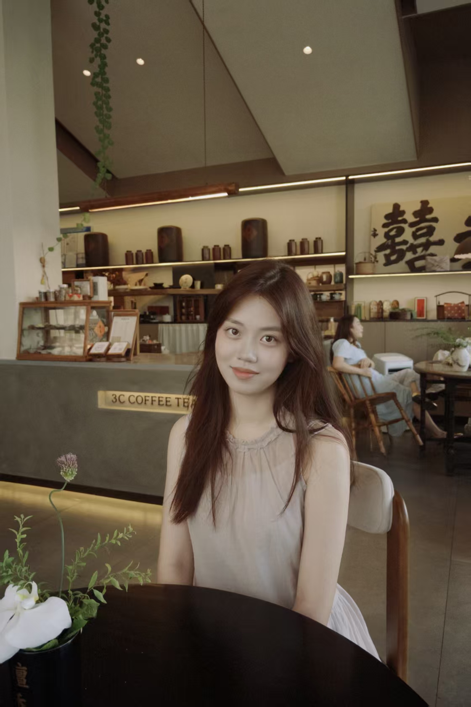
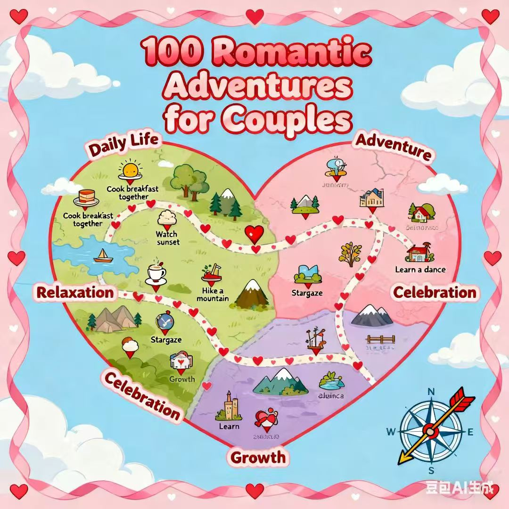
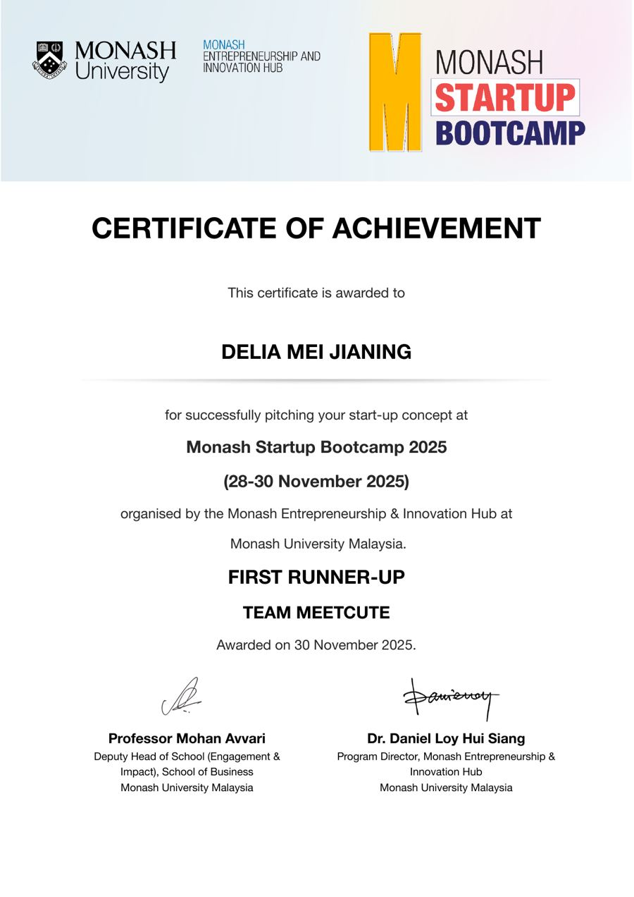
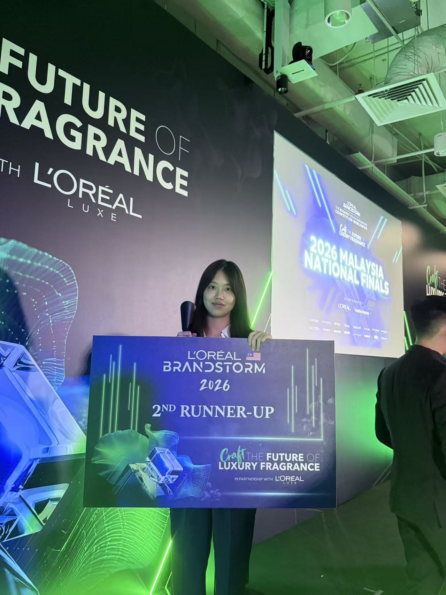
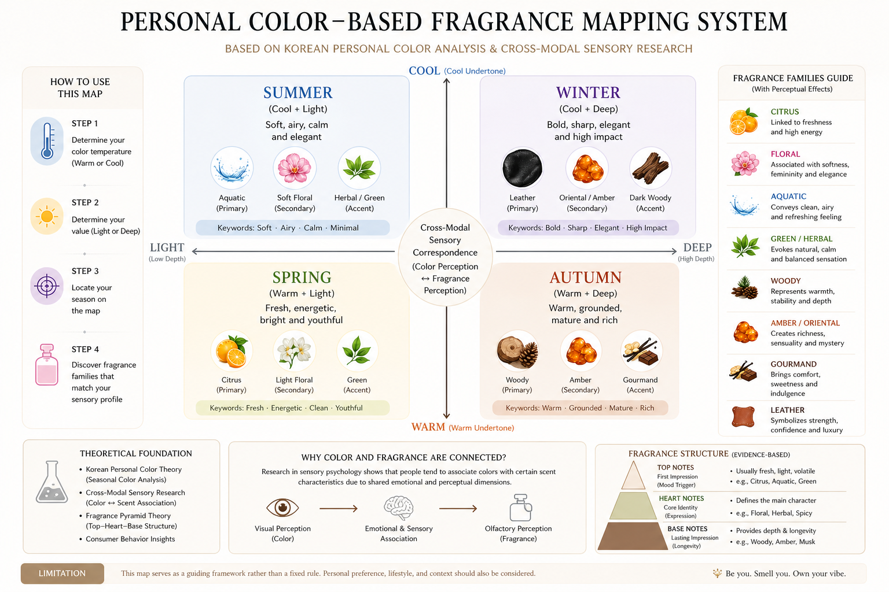

About — 梅佳凝 · 个人作品集
梅佳凝
关于我
我喜欢从不同领域中寻找连接，并把这种连接转化成具体的问题和作品。我的兴趣横跨内容、用户、文化与 AI，也因此习惯从不同视角理解一个问题，再通过研究、分析和实践验证自己的想法。
比起给自己定义一个固定方向，我更在意一个想法最终能不能落地——它可以是一套分析方法、一个数字工具，也可以是一个新的产品概念。
目前，我和团队参加过 L'Oréal Brandstorm、CCSIC、Monash 创业训练营等竞赛，并参与第一届中国国际大学生数字人文节，作品入选展示。

技能与工具
数据与分析
研究方法
工具与内容
语言
教育背景
Monash University
商学学士 · 战略营销（Bachelor of Business and Commerce · Strategic Marketing）
整体成绩排名前 30%
经历：实习 + 比赛获奖
▸ 实习
网易 LOFTER · 线上内容运营实习生工作 / 实习
- 垂直账号运营：单条最高近 5 万浏览、近 7000 点赞，累计 600+ 粉丝
- AI 语音生成 + 视觉素材制作小说剧情类内容，按数据反馈迭代选题
李校来啦 · AI 英语学习平台 · 一对一陪练师工作 / 实习
- 一对一英语陪练，累计带教约 5 名学生，覆盖词汇、语法、阅读等模块
- 音标、自然拼读与词根记忆辅助记词，大部分学员成绩明显提升
▸ 比赛获奖 · 星河时间线
按时间顺序 · 左右错落分布 · 每条标了「研究 / 商业」方便快速定位 · 点击查看详情
Monash Startup Boot Camp
First Runner-Up（团队第二）· 约会产品再定位为情感关系维系平台
点击查看详情 ↗


查看证书 PDF创业训练营：把原始约会匹配产品重新定位为情感关系维系平台，团队 MEETCUTE 拿到 First Runner-Up（第二名）。
产品定位：设计用户互动与商户合作机制，用一张"情侣任务地图"把任务分成日常、冒险、放松、庆祝、成长等板块，重新梳理用户使用场景与产品价值。
商业模式：把地图里的任务和对应品牌 / 连锁店打通——用户完成任务时引导至合作商户消费，平台按合作抽取推广费；同时把匿名化的使用数据整理后提供给商户，帮他们更准确地预判节假日与工作日的备货、排班等准备工作。
↳ 28–30 Nov 2025 · Monash Entrepreneurship & Innovation Hub 主办
L'ORÉAL BRANDSTORM 2026
AI 个性化香氛 · 马来西亚赛区全国第三 · 用户分层定价方案
点击查看详情 ↗

颁奖照片（即获奖凭证）
用户研究：分析消费者需求、目标客群与使用场景，结合四季色彩与香调偏好构建用户画像。
产品设计：把个性化香水创意转化为消费方案，通过竞品研究筛选产品方向。
系统构建：把团队零散的点子收拢，梳理成一套"个人色彩 × 香调"的对应理论——按冷暖、明暗分出四个象限，各自匹配柑橘、花香、木质、东方调等香型，让创意变成一套可执行、可复用的匹配系统，并制作了现场演示视频（见上）。
商业模式：提出线上会员制 + 线下按次体验模式，兼顾不同消费习惯。
《以艺愈心》AI 数字艺术平台
Seen — Healing the Heart through Art · 2026 国际学生创新大赛 · 加拿大赛区 二等奖
点击查看详情 ↗
背景研究：负责社会、政策、市场及行业研究，分析情绪支持领域的用户需求与行业缺口。
需求与商业：从目标用户、使用场景与核心痛点梳理需求，分析潜在合作机构与 B2B2C 商业模式。
商业模块：设计 IP 周边的收入结构，制作了简单的预算表，并结合市场政策研究，为 B2B2C 合作路径提供落地支撑。
↳ 国际团队项目 · 南京大学推荐参赛 · August 2026
《秦淮泊》数字人文叙事
Qinhuai Bo · CCSIC 加拿大赛区 三等奖 · 入选第一届中国国际大学生数字人文节 · BCI 脑机接口 · 粒子水墨
点击查看详情 ↗
整个装置以《泊秦淮》的诗歌意象为叙事基底，把它拆成一组可量化的参数——每一句诗对应一个场景，这些参数作为场景切换、音乐切换与粒子效果变化的参考基准。
而做这件事的初衷，是跨文化传播「意境」：把「意境」这个难以直译的东方概念，转译成一个可被身体感知的沉浸空间，让不同文化背景的观众都能真正体会到它是什么。
商业模式：作为主要负责的模块，梳理装置的落地路径与合作方式（装置结构见上图：四面投影 + 头戴式 BCI，观众坐在中央感受实时渲染的粒子水墨）。
视觉与技术：参与简单的 TouchDesigner 粒子水墨设计，联动视觉、音乐与粒子流速做效果测试。
沉浸交互：接入脑机接口（BCI），以 Engagement 指标优化场景切换与视觉参数。
跨文化沟通：团队是国际团队，负责向外国同学解释"意境"这个概念，帮助大家理解作品背后的东方美学逻辑。
此外，该装置入选第一届中国国际大学生数字人文节（入选证书见上）。
↳ 装置实拍演示视频见上 · 南京大学推荐参赛 · August 2026